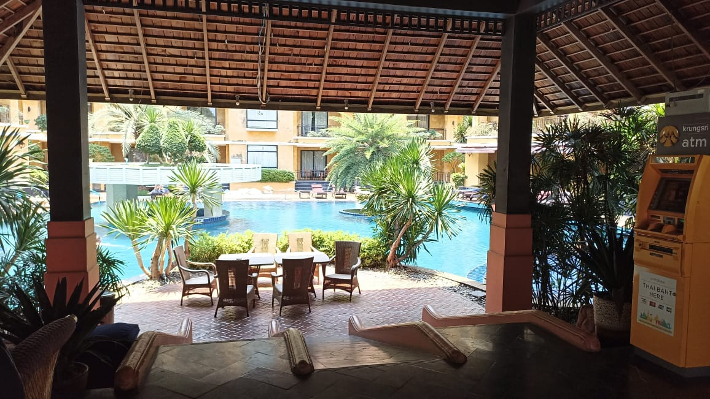

Pattaya is a city in Eastern Thailand. Pattaya is well-known as its long, wide beaches, bustling nightlife and rich cultural diversity. Pattaya is a city that has cozy and chill atmosphere with friendly faces. In short, Pattaya is a suitable tourist destination for people who wants to experience slow life pace and windy beaches.
Personally, I visited Pattaya twice. My first time visiting Pattaya was on 2023. I went there for an international mathematics competition (TIMO) with my friends and our legal guardians. The second time I visit Pattaya was on a vacation with my family members. We visited the beach in Pattaya, as well as tasting the local cuisine.
The reason I love Pattaya is the combination of slow-paced vibes and beautiful natural scene, makes it perfect for tourist to have fun there. We have been treated with the enthusiast hospitality provided by people there. Moreover, the beach there was perfect, with clear water and white sand.
Subsequently, Pattaya is well-known for its vibrant nightlife. There are a lot of night markets and shows, offering a diverse range of entertainment. Furthermore, Pattaya foods are not only delicious, but also cheap, making it affordable for people who likes to try Thailand cuisines. Starting from main dishes such as Tom Yum till appetizers such as Mango Sticky Rice, offering various types of delicacy foods.
In short, I love Pattaya not only because of the memories there, but also because of its cozy atmosphere, friendly hospitality, vibrant nightlife, as well as tasty foods.
